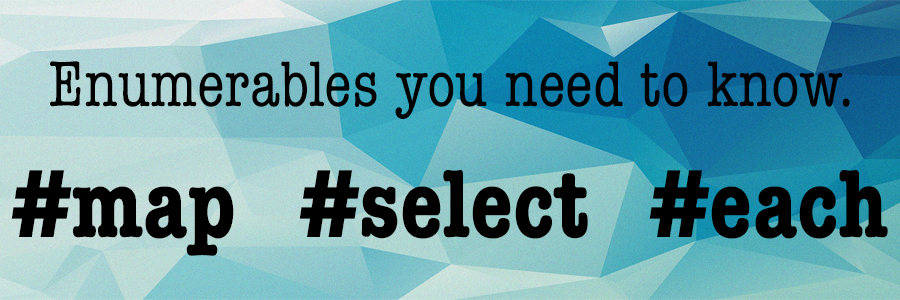

Ruby Enumerables
1/30/16
Collections are a powerful way to organize your data in Ruby. Like lists, collections contain multiple objects that can be accessed, sorted, printed, etc. For example, arrays and hashes are examples of two of the most common Ruby collections. However, there is one common problem when utilizing collections - iterating through every value in the collection. Collection values need to be changed, sorted, removed, inserted, the list goes on and on. This is where the enumerable module comes in to play. Enumerables allow you to iterate through every value in a collection to complete a variety of tasks.
Think of an enumerable like an iterator. Having an enumerable module connected to your collection gives it access to a plethora of iteration options - given one condition. The collection must have an each method that allows the enumerable module to understand exactly how they are supposed to iterate through the collection. For example, as previously stated, arrays and hashes are both collections. Arrays are simple. When you iterate an array, you simply go from the first value, to the second, to the third, until you run out of values. However, not all collections are as straight forward as arrays. Take the hash. When you iterate through a hash you have two variables, the key and the value. How does an iterator (aka the enumerable) know how to iterate through every value in a hash? The answer - the iteration method is defined in #each. #each tells the the enumerable module to expect two values, which allows the hash access to all kinds of cool methods.
In this post, I will review what I view to be the three most important enumerable methods - #map, #select and, of course, #each. We will look at what these methods do and how they interact with both arrays and hashes. First the most important method, #each.
#each
As previous stated, each is the cornerstone of any enumerable module. #each tells the enumerable how to iterate through the collection. #each is a method that can be called by an collection utilizing enumerable.
#each iterates through every value in the collection and completes some command. The command does not necessarily need to be related to the value of the collection. #each is non-destructive, and the return value of #each is always the initial collection. Because of this, you will almost never see a #each method return to a variable. Let’s take a look at #each in arrays and hashes.
Array
array = [1,2,3,4]
array.each { |num| puts num }
——
1
2
3
4
Hash
hash = {“First Name” => “Tori”, “Last Name” => “Huang, “Age” => 25}
hash.each { |key, value| puts “#{key}: #{value}” }
——
First Name: Tori
Last Name: Huang
Age: 25
In the examples above, the enumerable method #each iterates through every value in the array and hash, and completes some command. In this case, that command is to print the value of the collection to the console.
#map
#map is a really useful method! Think about a time when you needed to change every value in a collection. This would be a good time to use #map. #map is different from #each, as it iterates through every value in a collection and changes the collection in some way and then returns the new value.
A few key things you need to know about #map
- #map returns an array, always
- #map changes each value in the array to the first command passed to the method
- #map is a non-destructive method, although Array contains a destructive #map! method
Now let’s look at an example with Array!
Array
array = [1,2,3,4]
print array.map { |x| x*2 }
puts ""
print array
——
[2,4,6,8]
[1,2,3,4]
This follows all the rules listed above. #map returns an array, it changed all the values to x * 2, and the array was non-destructive. Now, let's look at hash. Remember, #map always returns an array! How do you think #map will work with a hash?
Hash - Values Changed
hash = {“First Name” => “Tori”, “Last Name” => “Huang, “Age” => 25}
witness_protection = hash.map{|key,value| value="Unknown"}
print witness_protection
——
["Unknown", "Unknown", "Unknown"]
Again, this example follows all the rules of #map. #map always returns an array. This can get confusing when #map is being called on a hash. There are two values, how is the array created? Well, we know that #map completes some command for values passed to the argument block. For a hash, both the key and value are passed. In this case, value is what we are changing. Therefore, it is an array of all values in the hash that will be returned. In this example, we change each value to "Unknown", so we simply get an array of "Unknown". However, if we were to change the value of the keys instead, we would get an array of the changed key values. Take a look at the example below, for further understanding.
Hash - Keys Changed
hash = {“First Name” => “Tori”, “Last Name” => “Huang, “Age” => 25}
wahoo = hash.map{|key,value| key + "!"}
print wahoo
——
["First Name!", "Last Name!", "Age!"]
#select
This is arguably one of the most common Ruby Enumerable methods. #select, aka #find_all, iterates through each value in a collection and selects only the values that meet a given condition. It then returns a collection of the same type as the original collection containg values that met the criteria. That sounded a bit complicated, let's just look at an example.
Array
array = [1,2,3,4]
print array.select {|x| x>=3 }
——
[3, 4]
Hash
hash = {“First Name” => “Tori”, “Last Name” => “Huang, “Age” => 25}
new_hash = hash.select { |key, value| value == “Tori” }
new_hash.each { |key, value| puts “#{key}: #{value}” }
——
First Name: Tori
In the first example, #select was called on an array, so it returned an array. In the second, a hash, and #select returned a hash. The opposite of #select would be #reject, which completes the same process while returning the original collection minus the values that meet the given condition.
More Resources
Thanks for reading! For more information and resources, check out the links below. They are incredibly helpful, and are where I found all the data for this post.